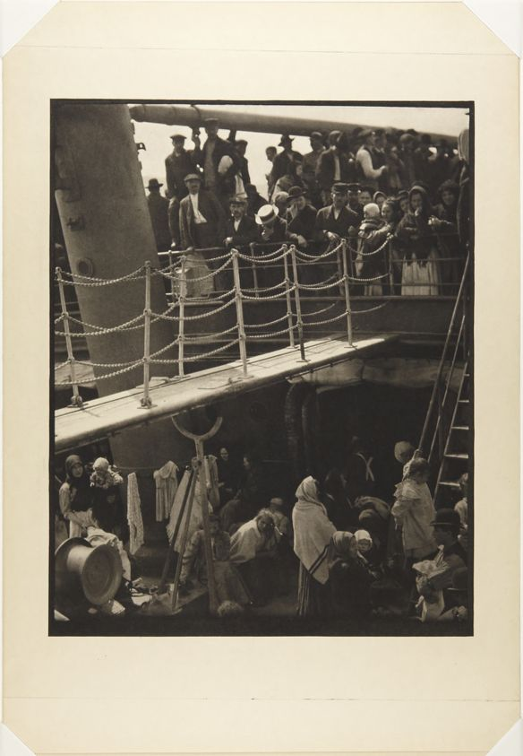
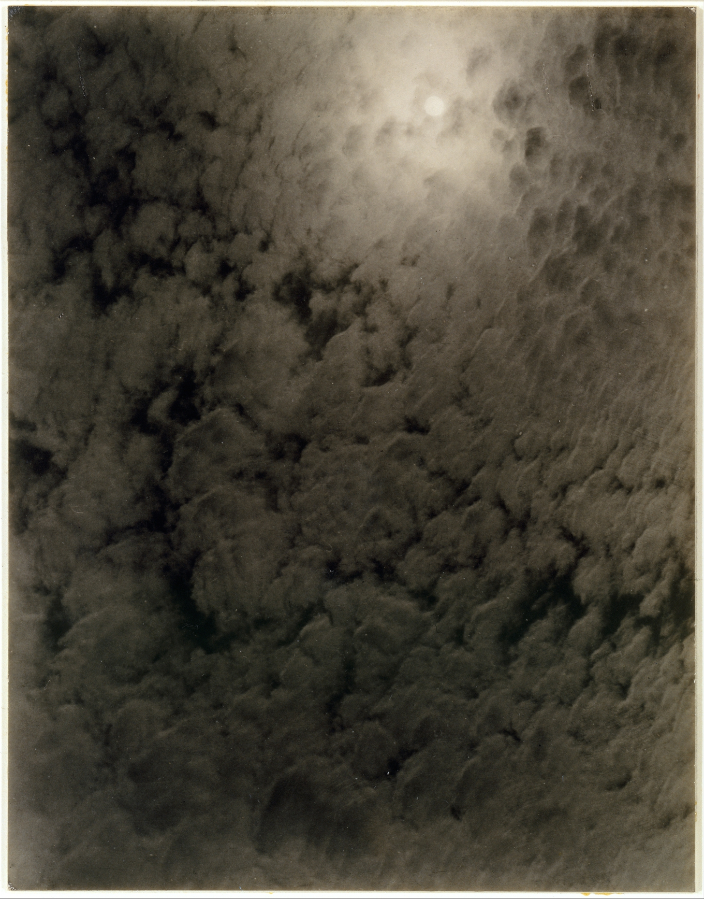
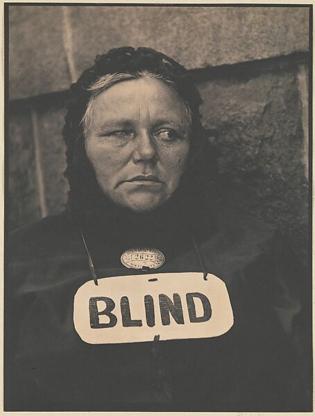
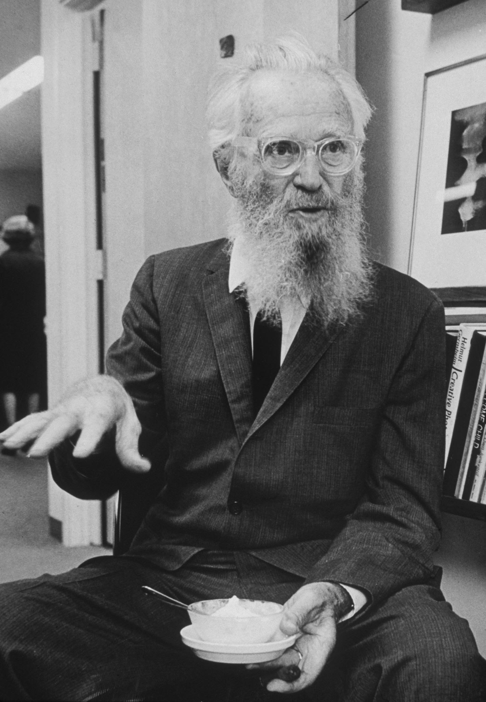
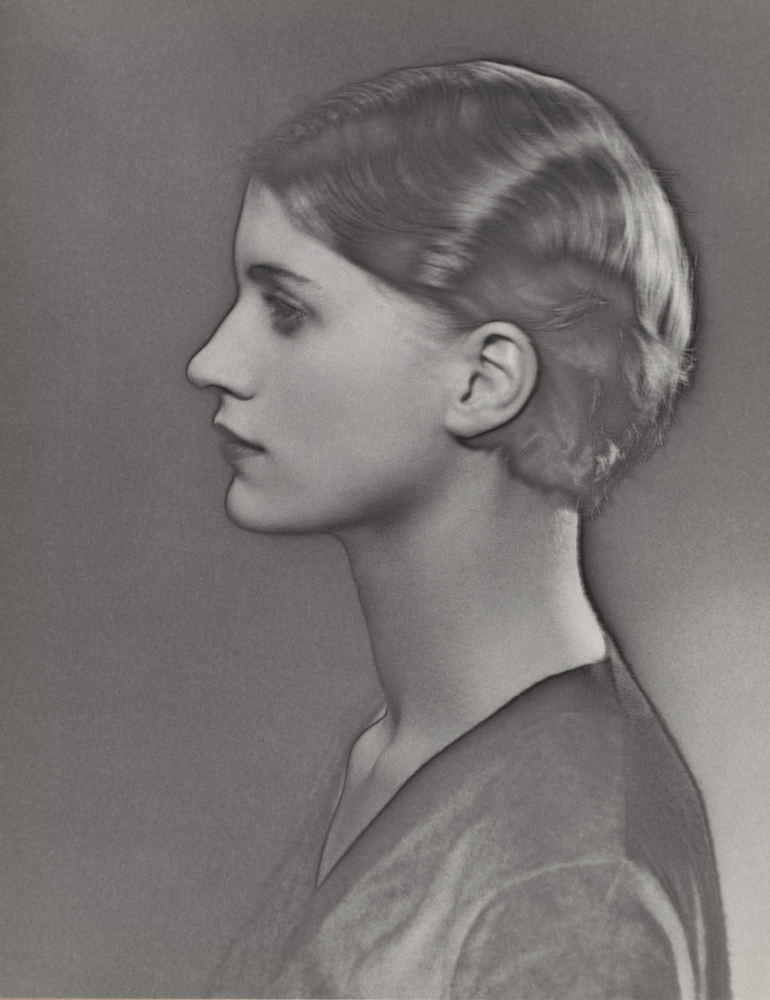
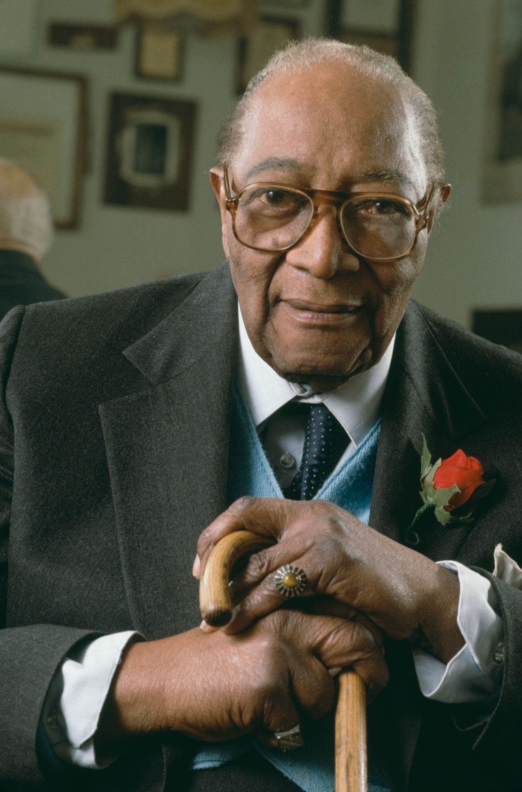

HIST 102 · Chapter 24
Photography
in the Jazz Age
Stieglitz · Strand · Steichen · Man Ray · Van Der Zee · Lange · Bourke-White · Hine
1915 – 1932
📖 About This Deck
This standalone deck draws the photography material from the Jazz Age lecture into its own concentrated study resource. Eight photographers, a Gallery 291 slide, and the O'Keeffe section repositioned as a case study in photographic representation rather than as painting. The Hopper material remains in the parent Jazz Age lecture where it belongs structurally.
The Art Deco aesthetic is deliberate — the visual language of the decade these photographers were working in. The geometric borders, the Cinzel Decorative typeface, and the gold-on-black palette are period-appropriate rather than arbitrary design choices.
The Photographic Shift
What Changed — and Why It Mattered
From permanence to the captured instant — the camera learns to see like the decade feels
📖 Understanding This Slide
This section frames the entire photography deck with a single structural contrast: Victorian photography vs. 1920s photography. The contrast is not just aesthetic — it maps onto the decade's broader cultural shift from order and permanence to motion, spontaneity, and the expressive potential of the moment. Photography, like jazz and film, shifted from a medium organized around posterity to one organized around the present instant.
Breaking It Down
Victorian photography was organized around permanence and formality. The portrait studio was a controlled environment; subjects posed motionless for long exposures; the goal was a dignified record for posterity. Photography claimed legitimacy by imitating painting — soft focus, allegorical subjects, studio tableaux. The aesthetic term for this tradition was Pictorialism .
1920s photography rejected all of this. Straight photography — sharp focus, no manipulation, no allegorical staging — became the modernist standard. Photographers began to value what the camera could do that the eye could not: freeze motion, crop radically, find geometry in everyday objects, catch the unrepeatable instant. The photograph stopped trying to look like a painting and started exploiting what made it uniquely photographic.
Why This Matters
The eight photographers in this deck each represent a different answer to the question: what can photography do that no other medium can? Their answers are radically different — Stieglitz pursues emotional equivalence, Strand pursues geometric confrontation, Steichen pursues commercial elegance, Man Ray pursues Surrealist disruption, Van Der Zee pursues documentary dignity, Lange pursues social witness, Bourke-White pursues industrial sublime, Hine pursues labor's human face. The decade produced all of them simultaneously, from the same set of technical possibilities and cultural pressures.
Victorian Photography vs. the Modern Eye
◈ THE TRANSFORMATION ◈
Victorian (before 1910)
Long exposures — subjects must be motionless
Studio control — posed, lit, arranged for permanence
— photography imitating painting through soft focus and manipulation
The photograph as a document addressed to posterity
Modernist (1910s–1920s)
Fast shutters — motion captured , blur becomes expressive
Street, factory, face — the world as found, not arranged
— no manipulation, radical clarity
The photograph as an address to the present moment
The camera stopped trying to look like a painting — and discovered what it alone could do
📖 Understanding This Slide
The two-column structure here is the argument in its simplest form. Every photographer in this deck is working on the right-hand side — though each arrives at different answers about what "the world as found" means, whose world deserves the camera's attention, and what the camera's clarity is for.
🎓 Historians Weigh In
Alan Trachtenberg — Reading American Photographs
Trachtenberg examined how American photography functioned as a historical medium — not just recording history but participating in how Americans understood their own present and past. His reading of the shift from 19th-century to 20th-century photography emphasizes the changing relationship between the photograph and its social function. Victorian photography was embedded in institutional contexts (the portrait studio, the archive, the family album) that determined how images were made and used. The modernists broke from those contexts — or used them critically — to claim a new autonomy for the photographic image as personal and artistic expression.
Gallery 291
The Room Where Photography Became Art
291 Fifth Avenue, New York · 1905–1917
📖 Understanding This Slide
Gallery 291 is the institutional hinge of the entire photography section. Without it, Stieglitz is a talented photographer working in isolation. With it, he is the architect of the argument that photography belongs on gallery walls — an argument that changed what photography could mean in American culture. This section divider frames what follows: the photographers who worked within 291's orbit (Stieglitz, Strand, Steichen) and those who built parallel institutions outside it (Van Der Zee, Lange, Bourke-White, Hine).
Gallery 291 — The First American Avant-Garde Space
◈ 291 FIFTH AVENUE · 1905–1917 ◈
What It Showed
First American venue to exhibit Picasso, Brancusi, Matisse, Cézanne — before any museum did
Photography shown alongside painting as equal in ambition and seriousness
Stieglitz's journal (1903–1917) — the theoretical organ of photographic modernism
What It Argued
Photography was not a mechanical process — it was an art form capable of expressing the inner life of the artist
The gallery as a cultural institution that could legitimate new media
It closed in 1917 — but the argument had already been won
Every photographer in this deck is working in the world Gallery 291 made possible — or against it
📖 Understanding This Slide
Gallery 291 is the most important art gallery most Americans have never heard of. Between 1905 and 1917, Stieglitz used a small brownstone at 291 Fifth Avenue in New York to make two simultaneous arguments: that photography was a serious art form, and that American culture needed access to European modernism. He made both arguments at the same time, in the same room, by hanging Picasso drawings next to Stieglitz photographs.
Why this was radical: In 1905, no American museum had shown Picasso. No American gallery had argued seriously that a photograph could hang next to a painting as an equal artistic achievement. 291 did both. By the time it closed in 1917, American cultural institutions could no longer pretend that either European modernism or photographic art didn't exist. The Metropolitan Museum acquired its first Cézanne in 1913 — the year after 291 showed him.
The journal Camera Work : Stieglitz published this quarterly from 1903 to 1917, printing photogravures of exhibition work at a quality that made the journal itself an art object. It is the primary documentary record of what 291 showed and argued, and it remains one of the most beautiful periodicals in American publishing history.
The institutional map: The photographers who follow in this deck can be roughly sorted by their relationship to 291's institutional world. Stieglitz and Strand worked inside it; Steichen moved between it and commerce; Man Ray went to Paris and found Dada instead; Van Der Zee, Lange, Bourke-White, and Hine built entirely separate institutional homes — and arguably produced work of greater historical significance for doing so.
PHOTOGRAPHER I
Alfred Stieglitz
1864 – 1946
The man who made photography matter — as art, as institution, as argument
— Making Photography Art
◈ 1864–1946 ◈
Founded Gallery 291 (1905) and Camera Work journal — the institutional architecture of photographic modernism
Argued photography could express the artist's inner life — not just record the external world
Championed Strand, Steichen, and a generation of younger photographers
His relationship with — photographer as maker of another artist's public image
📸 Alfred Stieglitz
Alfred Stieglitz · Public Domain
📖 Understanding This Slide
Alfred Stieglitz is the figure who made photography matter in America — not just as a documentary or commercial medium but as a serious art form capable of the formal complexity and emotional depth of painting. This slide introduces his career and the institutional structures he built to support that argument. Everything in the photography section flows from what Stieglitz established.
Breaking It Down
Gallery 291 and Camera Work : These were the two instruments of Stieglitz's argument. Gallery 291 showed photography as gallery art — on walls, in frames, next to Picasso and Matisse. Camera Work published photogravures of exhibition work at a quality that made the journal itself an art object.
Photography expressing the inner life: This was the radical claim. Victorian photography documented the external world with mechanical fidelity. Stieglitz argued the camera could express what the photographer felt — that light, composition, and tone could communicate subjective states as directly as brushwork or musical harmony. The Equivalents are his most extreme statement of this position.
🎓 Historians Weigh In
Sarah Greenough — Alfred Stieglitz: The Key Set
Greenough's two-volume catalogue of Stieglitz's complete photographic output is the definitive scholarly resource on his work. Her introductory essays establish Stieglitz's central contribution: the argument that photography was a medium capable of expressing the artist's inner life rather than merely recording external reality. For students, her framework helps explain why the Equivalents — clouds, with no subject — are such a radical statement: they represent Stieglitz's argument pushed to its logical extreme.
Stieglitz — The Steerage (1907)
◈ PHOTOGRAPHY AS PAINTING ◈
Shot spontaneously from the first-class deck of an ocean liner — the gap between classes visible in a single frame
Diagonal gangway divides the composition geometrically; passengers below unaware of the camera
Stieglitz called it the moment he knew photography could achieve the formal logic of painting
Published in Camera Work 1911 — immediately recognized as a landmark
🖼 View at MoMA →

📸 Stieglitz · The Steerage · 1907
Alfred Stieglitz · The Steerage · 1907 · Public Domain
📖 Understanding This Slide
The Steerage established photography's claim to be taken seriously as art — not by imitating painting, but by doing something painting couldn't do: capturing a complex, densely populated, formally rich composition in a single instant, in real conditions, with no opportunity for revision. Stieglitz's argument — that the camera could produce images with the structural logic of a painting and the immediacy of a captured moment — is proven here more convincingly than in any of his staged or manipulated work.
Breaking It Down
The social reading: The photograph divides the frame between first-class and steerage passengers — the class gap is literally spatial. But Stieglitz was primarily interested in the formal composition, not the social commentary. He said he barely noticed the people; he saw shapes, light, and geometry. The social reading came from others, and it became the dominant reading of the image in subsequent decades.
The compositional achievement: The diagonal gangway, the round stovepipe, the suspended chain, the white straps of the harness — these geometric elements organize a chaotic scene into a coherent visual structure. Stieglitz was demonstrating that a photographer could compose as rigorously as a painter — not by controlling the scene but by choosing the moment.
Stieglitz — Equivalents (1925–1934)
◈ PHOTOGRAPHY WITHOUT SUBJECT ◈
Close-cropped photographs of clouds — no horizon, no ground, no recognizable subject
Stieglitz's argument: the camera could produce pure emotional equivalents in light and tone, without depicting anything
The most radical claim in the history of photography — that a photograph need not be of anything
Prefigures abstract expressionism by two decades
🖼 View at The Met →

📸 Stieglitz · Equivalent · 1925
Alfred Stieglitz · Equivalent · 1925 · Public Domain
📖 Understanding This Slide
The Equivalents are the most demanding images in this deck — and the most theoretically significant. They ask you to experience a photograph without the usual cues about what it means. That demand is the point: Stieglitz was training his audience in a new kind of visual literacy, one in which form and feeling are the primary categories rather than subject and narrative. This is the same literacy that abstract expressionism would develop in painting a decade later.
What "equivalent" means: Stieglitz used the term deliberately. He was not photographing clouds because he was interested in clouds. He was photographing clouds because they provided the tonal and formal qualities he needed to produce an image that was the equivalent of an internal state — an emotion expressed in light rather than language. The clouds are irrelevant; the light patterns are everything.
The Symbolist lineage: Stieglitz's debt to late 19th-century Symbolist aesthetics — the idea that art's purpose was to evoke internal states rather than represent external reality — helps explain why the Equivalents look the way they do. He translated a literary and painterly tradition into photographic terms: instead of symbolic imagery or color, he used the formal properties of light and tone to produce emotional equivalence.
Stieglitz — Georgia O'Keeffe (1918–1937)
◈ THE PHOTOGRAPH AS POWER ◈
Stieglitz photographed O'Keeffe over four hundred times across two decades — hands, torso, face, draped in fabric
The series established O'Keeffe in the public imagination as a sexual subject before she could establish herself as a painter
Critics read her flower paintings through the erotic frame Stieglitz created — a frame she spent her career trying to dismantle
Who controls the image of the artist? The photographer — not the subject
📸 Stieglitz · Georgia O'Keeffe · 1918
Alfred Stieglitz · Georgia O'Keeffe · 1918 · Public Domain
The portrait series as a power relationship — O'Keeffe participated, but could not control what the images meant
📖 Understanding This Slide
This slide repositions O'Keeffe from painter to photographic subject — which is how Stieglitz's audience first knew her. Before she had established herself as a visual artist, Stieglitz had exhibited his portraits of her at 291 and distributed them through Camera Work . The erotic frame he established became the default frame for reading her work — including her flower paintings, which O'Keeffe maintained were formal studies in abstraction, not sexual imagery.
The analytical question this slide opens: "Who controls the image of Georgia O'Keeffe?" is also the central question of the entire photography deck. Van Der Zee's subjects controlled their own representation — they chose their clothing and poses and collaborated in constructing the image. Strand's Blind Woman had no control and no knowledge of the image. O'Keeffe participated but could not control how the images were exhibited, interpreted, or used. These three positions — collaborative control, violation, and ambiguous consent — map most of the ethical territory of photographic representation.
🎓 Historians Weigh In
Roxana Robinson — Georgia O'Keeffe: A Life
Robinson's biography is the most thorough account of O'Keeffe's relationship with Stieglitz and the role his photographs played in shaping — and constraining — her critical reception. Robinson shows that O'Keeffe was acutely aware of the problem: she could not stop critics from reading her flowers as sexual imagery because the Stieglitz nudes had established that reading as the default frame. This was not a minor irritation but a sustained professional injury — O'Keeffe spent decades fighting for the right to have her formal intentions taken seriously on their own terms, against a critical apparatus that Stieglitz's images had constructed.
PHOTOGRAPHER II
Paul Strand
1890 – 1976
Stieglitz's argument made harder — straight photography with a social conscience
📖 About Strand
Paul Strand is the photographer who took Stieglitz's argument — that photography could be a serious art form — and pushed it in a sharper, harder direction. Where Stieglitz pursued emotional resonance and formal beauty, Strand pursued geometric precision and social confrontation. His work asks not just "can photography be art?" but "what can photography see that other forms of attention miss?"
— Sharpness as Ethics
◈ 1890–1976 ◈
Trained at Camera Club under Stieglitz — then pushed past him toward harder, more confrontational work
Geometric precision as formal vocabulary: radical close-cropping, direct angles, the camera's machine nature embracedSocial conscience: working-class subjects, urban poverty, the human face as political document
1916 is his decisive year — Wall Street , Blind Woman , White Fence in a single season
📸 Paul Strand
Paul Strand · Public Domain
📖 Understanding This Slide
Paul Strand represents the moment when modernist photography acquired a social conscience — when the formal intelligence developed by Stieglitz was applied not just to aesthetic problems but to questions of class, labor, and social visibility. The photographs that follow demonstrate both the formal precision and the social edge that made his work distinct.
🎓 Historians Weigh In
Maria Morris Hambourg — Paul Strand: Circa 1916
Hambourg's catalogue essay identifies 1916 as the decisive year — the moment when Strand moved decisively from pictorialism to straight photography, developing the formal vocabulary that would define his career. Her analysis shows that Strand was solving a specific problem: how to use the camera's mechanical precision as an expressive resource rather than a limitation. The sharp geometrical forms, the radical close-cropping, the direct confrontation — all of these were answers to the question of what the camera could do that the hand and eye could not.
Strand — Wall Street (1915)
◈ THE BODY AGAINST THE INSTITUTION ◈
Tiny human figures passing the dark, rectangular windows of the JP Morgan bank building on Wall Street
The geometric windows dwarf the people — architecture as institutional power made literally visible
No faces, no individuality — the figures are interchangeable beneath the weight of capital
The most explicitly political photograph in the modernist tradition to this point
🖼 View at MoMA →
📸 Strand · Wall Street · 1915
Paul Strand · Wall Street · 1915 · Public Domain
📖 Understanding This Slide
Wall Street is the clearest demonstration of what Strand meant by straight photography in the service of social confrontation. The composition does not editorialize — Strand did not caption it with a political statement or arrange the scene. He found this composition, waited for the figures to arrive in the right positions, and shot. The political argument emerges from the formal relationship between human scale and architectural scale, not from any added commentary.
The window as symbol: The dark, rectangular windows of the JP Morgan building are not windows — they are voids. No light enters or exits. The building is opaque, sealed, impermeable. The tiny figures below are defined by their smallness relative to those voids. Strand has used the camera's ability to find geometric relationships to make an argument about power that no written statement could make as economically.
Strand — Blind Woman (1916)
◈ THE ETHICS OF THE CANDID ◈
A New York street vendor, blind, photographed without her knowledge using a false lens on the side of his camera
She wears a card reading "BLIND" — her vulnerability explicitly labeled
Formally extraordinary: direct confrontation with a face that does not know it is being confronted
The ethical problem: who owns the right to document? The photographer — or the subject?

📸 Strand · Blind Woman · 1916
Paul Strand · Blind Woman · 1916 · Public Domain
The most powerful images in this tradition are often the most ethically compromised — both things are true simultaneously
📖 Understanding This Slide
Blind Woman is the photograph that most directly raises the ethical dimension of documentary photography — and raises it in a way that has no clean resolution. The image is formally extraordinary. It is also the product of deliberate deception: Strand used a camera with a false lens on the side so he could point the real lens at his subject while appearing to aim elsewhere. She had no knowledge of and no consent to the image. She is also blind, and her disability is labeled on the card she wears — her vulnerability is doubly marked.
The contrast with Van Der Zee: This photograph sits at the opposite end of the representation ethics spectrum from Van Der Zee's portrait practice. Van Der Zee's subjects always knew they were being photographed — they chose their clothing, their poses, their settings, and collaborated actively in constructing the image. Strand purchased his formal achievement through a form of visual theft. Both traditions — the collaborative portrait and the candid document — remain central to photography. The tension between them has never been resolved.
Strand — White Fence, Port Kent (1916)
◈ GEOMETRY AS VISION ◈
A white picket fence photographed at such extreme close range that pickets become pure vertical rhythm
An ordinary domestic object transformed into abstraction — the modernist eye making the familiar strange
No social content, no political argument — pure formal investigation of what the camera can do with geometry
The three 1916 photographs together are a program: politics, ethics, and pure form — the full scope of photographic possibility
🖼 View at The Met →
📸 Strand · White Fence · 1916
Paul Strand · White Fence, Port Kent · 1916 · Public Domain
📖 Understanding This Slide
White Fence completes the triptych of 1916 Strand photographs that together define what straight photography could do. After the social confrontation of Wall Street and the ethical ambiguity of Blind Woman , White Fence demonstrates the purely formal dimension of Strand's program: the camera's ability to see geometry where the naked eye sees only a familiar domestic object.
The modernist defamiliarization: Strand is doing with the camera what Russian Formalist critics of the same period were theorizing as "defamiliarization" — making the ordinary strange by removing it from its conventional context and forcing the viewer to see its formal properties directly. The fence stops being a fence and becomes a pattern of light, shadow, and vertical rhythm. This is exactly the move Stieglitz was making with the Equivalents, but grounded in a recognizable object rather than abstract clouds.
⏸ Pause & Reflect
Strand's three 1916 photographs each make a different argument about what photography is for: political witness, social documentation, pure formal investigation. Can a single medium do all three — or does each purpose require a different kind of camera, a different kind of photographer?
📖 Thinking Through This Question
This question is not a trick — it's genuinely open. The photographers in this deck suggest two opposite answers. Stieglitz, Strand, and Man Ray argue (implicitly) that the serious photographer ranges across all three purposes as the work demands — that limiting yourself to one is a failure of ambition. Van Der Zee, Lange, Hine, and Bourke-White argue (implicitly) that a sustained commitment to a specific community and purpose produces work of greater historical depth than formal range. Both positions have produced extraordinary photographs. Neither has definitively won.
PHOTOGRAPHER III
Edward Steichen
1879 – 1973
The modernist eye moves into mass culture — art and commerce, indistinguishable
📖 About Steichen
Edward Steichen presents the counter-case to Stieglitz's gallery-centered modernism: what happens when the same formal intelligence moves into mass-circulation magazines? Steichen's career answers that question definitively — and in doing so raises the central problem about modernism and commercial culture. Where Stieglitz maintained a rigid distinction between art and commerce, Steichen dissolved it.
— Art Meets Commerce
◈ 1879–1973 ◈
Began as a Pictorialist and Gallery 291 collaborator — Stieglitz's closest ally
Chief photographer for Vogue and Vanity Fair (1923–1938) — modernist technique applied to celebrity and fashion at mass scale
His question: can the modernist eye sell magazines without losing its integrity?
Later: curator of The Family of Man (MoMA, 1955) — the most visited photography exhibition in history

📸 Edward Steichen
Edward Steichen · Public Domain
📖 Understanding This Slide
Steichen's career is the lecture's argument about modernism and mass culture made in biographical form. The question his work poses — can the modernist eye sell magazines without losing its integrity? — is the same question that appears throughout this deck: can Black musical innovation survive commercialization? Can formal ambition survive studio imperatives? Steichen said yes. The photographs that follow let you judge for yourself.
🎓 Historians Weigh In
Mary Warner Marien — Photography: A Cultural History
Marien's argument is that the boundary between "art photography" and "commercial photography" was a cultural construction — maintained by institutions like galleries and museums that had interests in keeping those categories separate — rather than an intrinsic difference in the work itself. Steichen's career demonstrated that the same photographer with the same formal intelligence could produce work that appeared in both contexts. The question of which label applied was less about the photographs themselves than about the institutional frame around them.
Steichen — Gloria Swanson (1924)
◈ CELEBRITY THROUGH THE MODERNIST LENS ◈
Swanson photographed through a lace veil — her face emerging from darkness like a vision through a screen
Modernist technique (high contrast, dramatic shadow, radical cropping) deployed to produce mystery as product
The star system required a specific kind of image — intimate but unreachable
Steichen understood the commercial brief and exceeded it formally
🖼 View at National Portrait Gallery →
📸 Steichen · Gloria Swanson · 1924
Edward Steichen · Gloria Swanson · 1924 · Public Domain
📖 Understanding This Slide
The Swanson portrait is the test case for Steichen's commercial modernism. The lace veil is not a formal experiment for its own sake — it solves a commercial problem. The star system required an image that produced intimacy (the face close, personal, address to the viewer) while maintaining unreachability (the veil, the darkness, the sense of the face withdrawn even as it approaches). Steichen's modernist technique — high contrast, dramatic lighting, the veil as formal element — produces exactly that effect. Is this art or advertising? Steichen's career insists the question is wrong.
Steichen — Greta Garbo (1928)
◈ REDUCTION AS REVELATION ◈
Stark high contrast: white face against absolute black — every detail eliminated except the features
The "mystery of Garbo" was a product MGM was selling — Steichen's formal reduction was the most efficient possible delivery mechanism
Modernist technique and commercial purpose become indistinguishable
The formal achievement does not diminish — but it complicates any simple claim that modernism transcended commerce
📸 Steichen · Greta Garbo · 1928
Edward Steichen · Greta Garbo · 1928 · Public Domain
📖 Understanding This Slide
The Garbo portrait makes visible something the Swanson portrait left ambiguous: that Steichen's modernist technique could serve commercial purposes with perfect efficiency. The "mystery" of Garbo was a product MGM was selling; Steichen's formal reduction was the most effective possible way to photograph that product. Understanding this does not diminish the image's formal achievement — it remains a remarkable photograph — but it complicates any simple claim that modernist technique transcended commercial culture. In this case, they were indistinguishable.
PHOTOGRAPHER IV
Man Ray
1890 – 1976
Philadelphia to Paris — photography as Dada, Surrealism, and deliberate disruption
📖 About Man Ray
Man Ray is the photographer who asked: what if photography did not document reality at all? Where Stieglitz, Strand, and Steichen — however different their approaches — all pointed a camera at something that existed, Man Ray began making photographs without a camera, or by chemically disrupting the photographic process itself. He is the figure who used photography to join Dada and Surrealism's project of dismantling the conventions of representation entirely.
— Photography Against Itself
◈ 1890–1976 ◈
Born Emmanuel Radnitzky in Philadelphia — moved to Paris in 1921, embedded in and Surrealism
Invented the Rayograph — cameraless photograph made by placing objects directly on photosensitive paper
— partial reversal of tonal values to create ghostly, doubled outlines
Question: if photography is supposed to document, what happens when it refuses to document anything?
📸 Man Ray · 1934
Man Ray · photographed by Carl Van Vechten · 1934 · Public Domain
📖 Understanding This Slide
Man Ray is the figure who pushed the modernist photography argument to its logical breaking point. Stieglitz argued photography could be art. Strand argued it could be social witness. Steichen argued it could be commercial art. Man Ray argued it could be none of those things — that a "photograph" need not be made with a camera, need not document anything that exists, and need not produce any recognizable image at all. He was using the photographic medium to dismantle the conventions of representation from within.
The Dada and Surrealist context: Dada was an art movement that questioned whether art was possible or desirable after World War I. Surrealism was its successor, interested in the unconscious, in dream imagery, and in the juxtaposition of incompatible objects to produce new meanings. Man Ray brought photographic technique into both — using the camera (and the absence of the camera) as a Dadaist and Surrealist instrument.
Man Ray — Rayograph (1922)
◈ PHOTOGRAPHY WITHOUT A CAMERA ◈
Objects placed directly on photosensitive paper and exposed to light — no camera, no lens, no negative
The result: ghost-images of objects — their shadows and presences registered in light, not their appearances
Man Ray claimed he discovered the technique by accident in the darkroom — Dada embraced accident as method
Photography stripped to its chemical and optical essence: light hitting sensitive surface
🖼 View at MoMA →
📸 Man Ray · Rayograph · 1922
Man Ray · Rayograph · 1922 · Public Domain
📖 Understanding This Slide
The Rayograph is Man Ray's most radical formal statement. By eliminating the camera entirely, he forced the question: what is a photograph, exactly? The camera is not the photograph — the camera is just a tool for directing light. A Rayograph is still a photograph in the technical sense (light acting on photosensitive material) but it has abandoned everything that made photography "photography" in the conventional sense (the lens, the viewfinder, the subject, the documentary function). It is photography reflecting on its own conditions of possibility.
The Dadaist logic: Dada was interested in destroying conventions by following their internal logic to absurdity. Man Ray applied this to photography: if photography is just light on sensitive paper, then anything that produces light on sensitive paper is photography. The Rayograph is not a violation of photography's rules — it's a rigorous application of photography's rules that reveals those rules were more arbitrary than anyone had admitted.
Man Ray — Le Violon d'Ingres (1924)
◈ THE BODY AS OBJECT ◈
Kiki de Montparnasse photographed from behind, f-holes painted onto her back in darkroom to transform her torso into a cello
Title references Ingres — the 19th-century painter famous for his odalisques and his amateur violin playing (a "hobby" called violon d'Ingres )
The female body simultaneously classical art object and musical instrument — both forms of male cultural possession
Surrealism at its most troubling: beautiful, funny, and ethically complex simultaneously
🖼 View at MoMA →
📸 Man Ray · Le Violon d'Ingres · 1924
Man Ray · Le Violon d'Ingres · 1924 · Public Domain
📖 Understanding This Slide
Le Violon d'Ingres is Man Ray's most famous single image, and it is doing several things at once — which is part of what makes it both brilliant and troubling. The surface wit is clear: the f-holes transform the woman's back into a cello, the title makes the comparison to Ingres explicit, and the pun on "hobby" (violon d'Ingres) is dry. Below the wit is something more uncomfortable: the woman as musical instrument is the woman as object of male pleasure and male culture, literally inscribed on her body.
The Kiki question: Kiki de Montparnasse (Alice Prin) was Man Ray's partner and collaborator — an artist and performer in her own right, not simply a model. She was aware of and participant in the photograph's production. This is a different relationship from Strand's Blind Woman (no consent) or Stieglitz's O'Keeffe (complex consent). But the resulting image still presents her as object rather than subject. The photograph holds both the collaboration and the objectification simultaneously — which may be the most honest representation of their actual relationship.
Man Ray — Solarized Portrait, Lee Miller (1929)
◈ THE ACCIDENT AS TECHNIQUE ◈
— partial reversal of tonal values, creating a ghostly doubled outline around forms
Man Ray and Lee Miller discovered the technique by accident when a light was turned on mid-development
Miller — his student, collaborator, and partner — became his subject and eventually his equal as a photographer
The technique transforms a portrait into something between document and dream
🖼 Lee Miller Archive →

📸 Man Ray · Lee Miller · 1929
Man Ray · Lee Miller (solarized) · 1929 · © Man Ray Trust
📖 Understanding This Slide
The solarized Lee Miller portrait is Man Ray's most technically innovative image — and it is paired with the most complex subject in the section. Lee Miller was not simply Man Ray's model. She was his student who became his collaborator, his muse who became his equal, and eventually a major photographer in her own right whose WWII documentary work (including photographs of the liberation of Dachau) is among the most important of the 20th century. The solarized portrait captures this complex relationship in photographic form: she is simultaneously his subject and his creative partner, present and ghostly, revealed and obscured.
The discovery of solarization: According to Man Ray, a mouse ran across Lee Miller's foot while they were in the darkroom; she turned on the light in fright, partially exposing the developing prints. The tonal reversal they observed in the ruined prints became a deliberate technique — Dada logic applied to the darkroom accident. Whether the story is true is less important than what it reveals about Man Ray's method: he was always looking for productive failures.
PHOTOGRAPHER V
James Van Der Zee
1886 – 1983
The counter-tradition — Harlem documenting itself, outside every white institution
📖 About Van Der Zee
Van Der Zee is the section's counter-argument — the photographer who used every formal tool the modernist tradition had developed, but put those tools in service of a community that the rest of the decade's visual culture was systematically excluding or caricaturing. His work is not an alternative to the photography we have been studying: it is a direct response to it.
— The Counter-Tradition
◈ 1886–1983 ◈
Harlem portrait studio from 1916 through the 1960s — an archive of tens of thousands of photographs
Documented every dimension of Black middle-class Harlem life with consistent formal intelligence and unfailing dignity
Counter-narrative to both white mainstream exclusion and nightclub exoticism — Harlem on its own terms
Unknown outside Black communities until the Met's Harlem on My Mind exhibition, 1969

📸 James Van Der Zee
James Van Der Zee · Public Domain
📖 Understanding This Slide
Van Der Zee's placement in this deck is deliberate. After Stieglitz (photography as art, through white modernist institutions), Strand (photography as social observation and formal experiment), Steichen (photography as commercial art), and Man Ray (photography as Surrealist disruption) — all of them operating within or adjacent to white modernist institutions — Van Der Zee demonstrates that the same period produced a photographer working entirely outside those institutions, with no access to Gallery 291 or Camera Work or Vanity Fair , producing work of equal formal sophistication in service of a community those institutions ignored.
🎓 Historians Weigh In
Deborah Willis — Reflections in Black: A History of Black Photographers
Willis's survey of Black American photography places Van Der Zee in the context of a long tradition of Black photographers who used the medium to document and assert the dignity of Black American life. Her argument is that this tradition operated in parallel with the white modernist photography canon, largely invisible to it, producing work of comparable or greater historical significance. Van Der Zee's belated "discovery" in 1969 was not simply the delayed recognition of a talented artist but the opening of a door onto an entire alternative history of American photography that white institutions had not bothered to look for.
Van Der Zee — Couple in Raccoon Coats (1932)
◈ HARLEM AS IT UNDERSTOOD ITSELF ◈
An African American couple in elegant raccoon fur coats posed before a Cadillac V-16 on West 127th Street, Harlem — the same consumer culture, the same aspirations, on their own terms.
Photographed in 1932 — after the Depression had started — prosperity as a statement of resistance . This is Harlem as its community understood itself, not the Cotton Club's exotic spectacle for white audiences.
📖 Understanding This Slide
Couple in Raccoon Coats (1932) is one of the most reproduced images in Van Der Zee's archive — and one of the clearest demonstrations of his counter-representational project. The couple are African American. This is worth stating directly because the tonal rendering of early 20th-century photographic film and print processes could render lighter-complexioned Black subjects very pale — compounded here by Van Der Zee's deliberate use of reflected light off chrome and the raccoon fur — which has led some viewers to mistake the woman for white. Every museum that holds a print identifies the couple as African American, and this identification is central to the photograph's argument.
Why raccoon coats matter: Raccoon fur coats were a major fashion item of the 1920s, associated primarily with white college students — symbols of youth, prosperity, and leisure. Van Der Zee's subjects are wearing them. They are occupying the same consumer culture, expressing the same aspirations through the same fashionable objects, with the same pride and ease. The image refuses any suggestion that Black Harlem was a separate or lesser world — it was participating in the same decade, on the same terms.
1932 — after the crash: The photograph was taken three years into the Great Depression. The conspicuous prosperity of the couple — Cadillac V-16, raccoon coats, comfortable posture — was not simply a record of success. It was a statement of resistance: that even in the Depression, Black Harlem maintained its dignity and aspirational self-presentation.
Van Der Zee — Marcus Garvey Parade (1924)
◈ THE POLITICAL HARLEM THEY DIDN'T SEE ◈
Marcus Garvey's UNIA parade through Harlem — thousands of marchers in uniform, flags flying, the street packed from curb to curb. Van Der Zee was the official photographer of the UNIA and documented its mass meetings and parades throughout the early 1920s.
The political Harlem that white audiences did not come to see — organized, proud, and demanding recognition on its own terms
📖 Understanding This Slide
The Garvey parade photographs represent the dimension of Black Harlem that was most invisible to white audiences and white media: its organized political life. Marcus Garvey's UNIA was the largest Black political organization in American history to that point — at its peak, claiming millions of members across the United States, the Caribbean, and Africa. Its parades through Harlem were massive public demonstrations of Black solidarity, pride, and political ambition.
Van Der Zee as institutional photographer: His role as official UNIA photographer means these images were themselves political acts — commissioned representations of the movement for its own archive and publicity. Van Der Zee was not documenting the movement from the outside; he was part of its self-presentation infrastructure. This makes the photographs primary sources not just for what the parades looked like but for how the UNIA wanted to be seen.
⏸ Pause & Reflect
Van Der Zee's archive was preserved by the Harlem community for fifty years without institutional support. It was "discovered" by white institutions in 1969. What does that fifty-year gap reveal about whose visual culture gets preserved — and why?
The archive's quality was not recognized until photography became more sophisticated
White cultural institutions systematically excluded Black cultural production from the archive they were building
Van Der Zee deliberately kept his work private
The Harlem community had no interest in wider recognition
📖 Thinking Through This Question
The correct answer is B . A, C, and D are factually wrong. Van Der Zee's formal sophistication is evident in any print from 1920; the quality was always there. He made no secret of his work and was well-known within Harlem. The Harlem community preserved the archive precisely because they understood its importance — they valued it long before any white institution noticed.
The gap is institutional: the history of American photography that white galleries, museums, and journals wrote between 1910 and 1969 was written without reference to Van Der Zee's archive because the institutions doing the writing were not looking at Harlem, except as entertainment. When the Met mounted Harlem on My Mind in 1969, it was not discovering something lost — it was acknowledging something that had been systematically excluded from the story those institutions told about American photography.
PHOTOGRAPHER VI
Dorothea Lange
1895 – 1965
The bridge from modernism to social documentary — the camera as witness, not artist
📖 About Lange
Dorothea Lange is the bridge figure between the modernist photography of the Jazz Age and the social documentary tradition of the 1930s. She trained as a portrait photographer in New York under Clarence White (a former Gallery 291 associate) and opened a portrait studio in San Francisco in 1919. Her 1920s studio work was formally accomplished and commercially successful. Then the Depression arrived, and Lange walked out of her studio and into the streets — and became a different photographer entirely.
Dorothea Lange — From Studio to Street
◈ 1895–1965 ◈
Trained as a portrait photographer in New York — formally accomplished, commercially successful 1920s studio practice in San Francisco
1930: walked out of her studio and into the streets — Depression breadlines, unemployed workers, dispossessed farmers
White Angel Breadline (1933): the image that announced the shift — the decade's prosperity turned to its obverseFSA photographer 1935–1939 — Migrant Mother
📸 Dorothea Lange
Dorothea Lange · Public Domain
📖 Understanding This Slide
Lange's shift from studio portraiture to street documentary is the most dramatic career pivot in this deck — and it is the pivot that makes her historically significant. Her 1920s studio work, while formally excellent, is not what put her in this lecture. What put her here is what happened when she took the formal skills she had developed in studio portraiture — attentiveness to the human face, understanding of light, the ability to compose quickly — and applied them to subjects that no one in the modernist photography tradition had thought to photograph systematically.
The Jazz Age connection: Lange's 1920s work represents the period's prosperity — the comfortable, formally posed, commercially successful portrait practice. Her transition to documentary work in the early 1930s represents the same period seen from the outside: the people who did not share in the decade's expansion, who were the first to fall when it collapsed. Together, the two phases of her career bracket the decade from inside and outside simultaneously.
🎓 Historians Weigh In
Linda Gordon — Dorothea Lange: A Life Beyond Limits
Gordon's biography is the most thorough account of Lange's career and the intellectual and political commitments that shaped her turn to documentary work. Gordon shows that Lange's shift was not simply a response to the Depression — it was the result of a developing political consciousness about the relationship between photography and social justice that had been building throughout the 1920s. Lange came to believe that the formal skills she had developed in portraiture had an obligation — that the camera should be turned toward those who needed to be seen, not just those who could pay to be photographed.
Lange — White Angel Breadline (1933)
◈ THE DECADE'S OBVERSE ◈
San Francisco, 1933 — a breadline run by a widow known as the "White Angel," feeding the unemployed
One man turned away from the crowd , facing the camera — isolation within mass suffering
Formally continuous with the portrait tradition: single figure, composed light, the face as psychological document
The Jazz Age's prosperity — its cars, its raccoon coats, its Cadillacs — reversed into this: hands on a wooden railing, nowhere to go
🖼 View at MoMA →
📸 Lange · White Angel Breadline · 1933
Dorothea Lange · White Angel Breadline · 1933 · Public Domain
📖 Understanding This Slide
White Angel Breadline is the hinge image in Lange's career — the photograph that announced her shift from studio portraiture to social documentary. Its formal sophistication is continuous with her 1920s portrait practice: she has composed the scene carefully, found the one figure who gives the image its psychological depth (the man turned away from the crowd, isolated within mass misery), and used the available light to produce tonal depth. But she is pointing her formal skills at a subject — mass unemployment, urban poverty, the human cost of economic collapse — that the modernist photography tradition had not addressed.
The connection to the rest of the deck: Place this photograph mentally next to Van Der Zee's Couple in Raccoon Coats (1932) — one year earlier, one city apart. Both are formally accomplished portraits of people claiming public space. One claims prosperity; one documents its absence. Together they are the decade's two faces, made visible by two photographers who were using the same formal tradition for completely different purposes.
PHOTOGRAPHER VII
Margaret Bourke-White
1904 – 1971
The industrial sublime — machinery as beauty, commerce as modernism
📖 About Bourke-White
Margaret Bourke-White is the complement to Steichen in this deck: where Steichen brought modernist technique to celebrity portraiture for Condé Nast publications, Bourke-White brought it to the factory and the machine for Henry Luce's publications. She is the photographer who found beauty in industrial infrastructure — steel mills, hydroelectric dams, construction sites — and in doing so created the visual vocabulary for how Americans would understand the built landscape of the 20th century.
Margaret Bourke-White — The Industrial Sublime
◈ 1904–1971 ◈
Late 1920s: industrial photography for Otis Steel (Cleveland) — steel mills as formal landscape , fire and metal as aesthetic subject
Founding photographer for Fortune magazine (1929) and Life magazine (1936) — first cover of both
Found the modernist formal vocabulary of Strand and Stieglitz — geometry, abstraction, close attention — and applied it to the factory floor
Her Fort Peck Dam photograph on the first cover of Life (1936) is one of the most reproduced images in American magazine history
📸 Margaret Bourke-White · 1943
Margaret Bourke-White · 1943 · Public Domain · Wikimedia Commons
📖 Understanding This Slide
Bourke-White is in this deck because she represents the Jazz Age's relationship to industrial modernity — the machine, the factory, the infrastructural sublime — in visual terms. The 1920s were the decade of mass production, Fordism, and the steel-and-concrete landscape that made the decade's consumer culture possible. Bourke-White photographed the foundations of that culture: the mills that produced the steel, the dams that produced the electricity, the factories that produced the cars. She found in those places exactly the formal qualities — geometric precision, dramatic light, the beauty of functional forms — that Strand had found in a picket fence and Stieglitz in a cloud.
The gender dimension: Bourke-White was photographing spaces — the factory floor, the steel mill, the construction site — that were almost entirely male environments and that women photographers had not previously documented. Her access was a negotiation: she was tolerated because she was good, and she produced images that demonstrated the industrial world's formal beauty to audiences who had never seen it. Her career is itself an argument about what happens when a formally trained photographer points her camera at territory that has been coded as masculine and therefore invisible to aesthetic attention.
Bourke-White — Fort Peck Dam (1936)
◈ INFRASTRUCTURE AS MONUMENT ◈
The spillway towers of the Fort Peck Dam, Montana — concrete columns rising like ancient pylons , tiny human figures below establishing scale
New Deal infrastructure as monumental architecture — the dam as American pyramid
Cover image of Life 's first issue
The modernist grammar of Strand's Wall Street (human figures dwarfed by institutional mass) applied to the New Deal's built landscape
🖼 View at MoMA →
📸 Bourke-White · Fort Peck Dam · 1936
Margaret Bourke-White · Fort Peck Dam · 1936 · Public Domain
📖 Understanding This Slide
The Fort Peck Dam photograph is one of the most formally sophisticated images in this entire deck. Bourke-White composed the concrete spillway towers as architectural columns — the visual grammar is simultaneously Art Deco (the geometric verticality, the monumental scale) and ancient Egyptian (the pylons, the processional scale relative to the human figures). She turned a piece of New Deal infrastructure into a monument — and in doing so, she made an argument about what the government was building: not just a dam, but a demonstration of what democratic government could achieve at scale.
The Strand parallel: Compare this to Strand's Wall Street (1915). Both use tiny human figures against massive institutional architecture to make an argument about scale and power. But the argument is opposite: Strand's bank building is opaque, sealed, indifferent to the people below. Bourke-White's dam is built by and for those people — the New Deal's promise made concrete. Same formal grammar, opposite political meaning. This is what it means to say that photography's formal vocabulary is available to multiple purposes simultaneously.
PHOTOGRAPHER VIII
Lewis Hine
1874 – 1940
Labor's photographer — the human cost of the industrial world Bourke-White made beautiful
📖 About Hine
Lewis Hine is placed last in this deck deliberately — after Bourke-White — because he represents the counter-view of the industrial landscape she photographed as sublime. Where Bourke-White found formal beauty in the factory and the dam, Hine found the human beings who built and worked in those structures: the mechanics, the steamfitters, the ironworkers, the steelworkers hanging over empty space on the Empire State Building's girders. His 1920s industrial work and his 1930–31 Empire State Building series together make the human case for the industrial world that Bourke-White's aesthetic case tends to abstract away.
Lewis Hine — Power House Mechanic (1920)
◈ THE WORKER AS HEROIC FIGURE ◈
A mechanic working on a steam pump — the human body in purposeful engagement with industrial machinery
Hine's visual argument: the worker is not diminished by the machine — he is its master and its equal
Formally: the body and the machine are in compositional balance — neither dominates the frame
Where Strand's Wall Street showed humans dwarfed by institutional power, Hine shows humans in productive relationship with industrial power
🖼 View at MoMA →
📸 Hine · Power House Mechanic · 1920
Lewis Hine · Power House Mechanic · 1920 · Public Domain
📖 Understanding This Slide
Power House Mechanic is Hine's argument about industrial labor compressed into a single image. The worker's body is muscular and purposeful — engaged with the machinery rather than dominated by it. The composition places the man and the machine in balance: neither dwarfs the other. This is a direct counter-argument to the narrative of industrial dehumanization — the worker is not a cog in the machine but a skilled practitioner in productive relationship with powerful technology.
The formal achievement: The photograph uses the modernist grammar of Strand and Stieglitz — the close cropping, the attention to formal relationships, the elimination of contextual information — but applies it to a subject those photographers did not focus on: the skilled industrial worker. Hine was not operating outside the modernist tradition; he was using its formal tools for a different political and social purpose.
Hine — Empire State Building (1930–31)
◈ LABOR AT THE EDGE OF THE SKY ◈
Hine photographed ironworkers suspended hundreds of feet above Manhattan during construction of the Empire State Building
The decade's most visible symbol of American ambition — built by men hanging in space, without safety nets, on piecework wages
The Art Deco tower as symbol of the Jazz Age; the ironworker's body as the human cost beneath the symbol
Hine was suspended alongside them, in a makeshift platform hung from a crane — the photographer sharing the risk of his subjects
🖼 View at The Metropolitan Museum of Art →
📸 Hine · Empire State Building · 1931
Lewis Hine · Empire State Building · 1931 · Public Domain
📖 Understanding This Slide
The Empire State Building series is Hine's most formally accomplished work — and the one that most directly connects to the Jazz Age's most visible symbol. The Empire State Building was built between 1930 and 1931, when the decade's prosperity had already collapsed, by a workforce that included many men recently arrived from the Caribbean and from Indigenous communities in Quebec and upstate New York who specialized in high-steel work. Hine photographed them suspended on unfinished steel beams, hundreds of feet above the Manhattan street grid, with the city's Art Deco towers visible in the background.
The closing argument of this deck: The Empire State Building photograph places the human cost inside the Jazz Age's most iconic architectural symbol. The building's Art Deco design — the pinnacle, the setbacks, the vertical thrust — is visible in the background of Hine's photographs. The worker in the foreground is what it took to build it. Hine is making the same argument Lange makes about the breadline and Van Der Zee makes about Harlem: that behind every image of the decade's prosperity and ambition is a human story that the official visual culture preferred not to show.
The photographer's risk: Hine himself was suspended in a makeshift platform or a concrete block hung from a crane to take many of these photographs. He shared the physical risk of his subjects. This is the opposite of Strand's hidden-lens method with the Blind Woman — and it is worth noting as an ethical position: the photographer who takes risks alongside his subjects produces a different kind of image than the photographer who conceals himself to capture his subjects unaware.
What Photography Did
Eight Photographers. Eight Answers. One Decade.
The camera asked a question. Eight photographers refused to agree on the answer.
Eight Photographers — Eight Arguments
◈ THE DECADE'S VISUAL INTELLIGENCE ◈
Stieglitz
Photography as art — the inner life expressed in light
Strand
Photography as formal investigation and social witness
Steichen
Photography as commercial art — modernism at mass scale
Man Ray
Photography as Surrealist disruption — against itself
Van Der Zee
Photography as community self-representation — dignity on its own terms
Lange
Photography as social documentary — witness to those who need to be seen
Bourke-White
Photography as industrial sublime — the machine as aesthetic subject
Hine
Photography as labor's advocate — the human cost behind every symbol
📖 Understanding This Slide
This slide does not rank the eight photographers or argue that one of them is "right." It maps the terrain they collectively opened. What is remarkable is that all eight were working in roughly the same period, with roughly the same technology, and produced such radically different practices. That diversity is evidence of how capacious the photographic medium is — and how much what photography "means" depends on who is pointing the camera, at what, for whom, and from where.
The connecting thread: Despite their differences, all eight share a commitment to the photograph as something more than documentation — as a formal and argumentative act. Even Hine, whose work is most explicitly social, understood that the formal choices (how to compose, where to stand, what to include and exclude) were themselves arguments. All eight are doing visual rhetoric, not just visual record-keeping. That shared understanding — that the camera makes claims, not just images — is the modernist photography tradition's most durable contribution.
What the institutional map reveals: Five of the eight (Stieglitz, Strand, Steichen, Man Ray, Lange) worked within or adjacent to the white modernist institutional world. Three (Van Der Zee, Bourke-White, Hine) built entirely separate institutional homes — the Harlem community, the Luce magazine empire, the reform and labor movements. The work produced outside the gallery system is not less formally accomplished. In most cases it is more historically significant. The institution does not determine the quality of the work.
⏸ Pause & Reflect
Three of these eight photographers built their careers entirely outside the white modernist institutional world that Stieglitz created. Did that separation limit them — or free them to produce work that the gallery system could not have accommodated?
📖 Thinking Through This Question
Both things are simultaneously true, which is what makes the question interesting. Van Der Zee, Bourke-White, and Hine were all limited by their exclusion from the gallery system: Van Der Zee was invisible to white art history for fifty years; Bourke-White's work was classified as journalism rather than art for much of her career; Hine died in poverty, his archive nearly lost. The institutional exclusion had real costs.
But the freedom is also real. None of the three had to negotiate with gallery owners, collectors, or the critical apparatus that defined "serious" photography within the Stieglitz orbit. Van Der Zee photographed for his community on his community's terms. Bourke-White photographed for magazines that reached millions of readers who had never been in a gallery. Hine photographed for reform organizations and labor movements whose purposes were entirely outside the art world's interests. Their work is historically significant in ways that gallery-centered photography rarely achieves — because it was embedded in the social and political life of its moment rather than elevated above it.